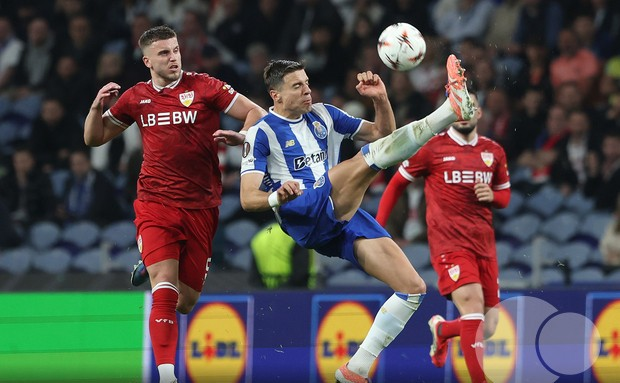

Après une double confrontation magistrale face au 4e de Bundesliga, le FC Porto confirme son statut de grand favori de l'Europa League. Retour sur une qualification autoritaire qui a marqué les esprits sur tout le continent.
Le FC Porto a rappelé à l'Europe entière que le prestige ne s'achète pas, il se gagne sur le terrain. En balayant le VfB Stuttgart avec un score cumulé de 4-1, nos Dragons ont validé leur place en quarts de finale de l'Europa League de la plus belle des manières. Face à une équipe allemande qui bouscule pourtant la hiérarchie en Bundesliga cette saison, les hommes du Dragão ont affiché une supériorité tactique et mentale qui ne laisse aucune place au doute.
Tout a commencé lors de ce match aller maîtrisé à la MHP Arena. Dans l'hostilité de l'ambiance allemande le 12 mars dernier, nos joueurs ont fait preuve d'un sang-froid clinique pour s'imposer 2-1 et ramener un avantage précieux à la maison. Ce jeudi, lors du match retour, l'Estádio do Dragão a une nouvelle fois été le théâtre d'une démonstration de force. Porto a verrouillé la rencontre dès les premières minutes, ne laissant aucun espace aux attaquants adverses.

Estádio do Dragão · Match retour · 03 Avr 2026
La victoire 2-0 scellée devant notre public n'est que la suite logique d'une domination totale, portée par le talent pur de William Gomes et la percussion de Victor Froholdt. L'écart de niveau entre le 4e de Bundesliga et notre institution a été flagrant tout au long de la double confrontation.
Alors que Stuttgart tentait d'imposer son rythme, Porto a répondu par une solidité défensive de fer, guidée par un Diogo Costa impérial. Même les meilleures attaques allemandes n'ont pas réussi à fissurer ce mur bleu et blanc.
Désormais, le regard est tourné vers les quarts de finale. Le tirage nous offre l'occasion parfaite de prendre une revanche attendue contre Nottingham Forest, qui nous avait surpris lors de la phase de ligue en octobre dernier. Le rendez-vous est fixé au 9 avril prochain au Dragão. Mais après avoir éteint Stuttgart avec une telle autorité, le message envoyé par le club est limpide : nous ne craignons personne. La route vers la gloire continue, et le Dragon a plus que jamais faim de trophée.